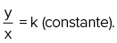
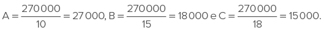
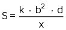
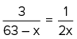
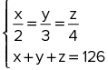
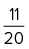
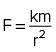

Na construção civil, são utilizadas diversas grandezas antes e durante as obras.
Drazen_/iStockphoto.com
Para concluir as obras de uma construção civil em menos dias, pode-se aumentar o número de trabalhadores. Além disso, caso a carga horária diária fosse ampliada, esse trabalho também poderia ser finalizado em um tempo menor. No entanto, essas duas possíveis ações elevariam os custos da obra. Note que, nesse problema, temos quatro grandezas envolvidas: número de trabalhadores, quantidade de dias, carga horária diária e custos.
Outras grandezas também poderiam ser consideradas, como maquinário, produtividade ou área da construção. Porém, em cada tipo de problema, é necessário refletir sobre as influências entre as grandezas apresentadas e que relações podem ser estabelecidas entre elas.
Diante disso, o principal critério de comparação é a análise da razão entre as grandezas, sendo tal observação muito utilizada em diversas áreas das ciências. Neste capítulo, estudaremos como as razões entre as grandezas se relacionam em um determinado problema e como podemos determinar as soluções.
- Qual é o melhor meio de comparação entre as grandezas?
- Qual é o significado da igualdade de razões que tratam das mesmas grandezas?
Neste capítulo será abordada a competência EM13MAT314.
Razão
Uma forma matemática muito importante e extremamente utilizada para a comparação de medidas e grandezas é a divisão. Para melhor entendê-la, podemos citar como exemplo uma pesquisa feita pelo Instituto Brasileiro de Geografia e Estatística (IBGE) no final de 2017, a qual indica que apenas 15 entre 100 brasileiros com mais de 25 anos possuem curso superior completo.
Esse levantamento diz que, se dividirmos os indivíduos dessa faixa etária em 100 partes, apenas 15 delas serão compostas de pessoas com Ensino Superior. Tal relação pode ser representada pela fração
Esse método, muito utilizado em várias áreas do conhecimento, é denominado razão, que é a comparação de duas grandezas mediante a divisão, indicando quantas vezes uma quantidade deve ser considerada (numerador) em relação a uma unidade de referência (denominador).

Exemplo:
Em um determinado ano, uma empresa teve renda bruta de R$ 160.000,00. No entanto, foram gastos R$ 100.000,00 com o pagamento de funcionários, impostos e outras despesas, rendendo, assim, R$ 60.000,00 de lucro líquido para essa instituição. Sabendo disso, vamos calcular a razão entre:
- as despesas da empresa relacionadas à renda bruta.
- o lucro líquido da empresa referente à renda bruta.
- o lucro líquido da empresa comparado aos gastos com as despesas.
Para saber qual é a densidade demográfica de uma determinada região, devemos calcular a quantidade de habitantes por quilômetro quadrado (hab./km2), escrevendo a seguinte razão:
Por exemplo, o estado da Bahia tem aproximadamente 564 733 km2 de área e uma população de 15 344 447 habitantes. Dessa forma, a densidade demográfica dessa região é
Ao resolver essas questões, tem-se:
- A razão entre as despesas da empresa relacionadas à renda bruta foi de
- A razão entre o lucro líquido da empresa e a renda bruta foi de
- A razão entre o lucro líquido e aos gastos com despesas foi de
Proporção
Ainda em relação à pesquisa citada anteriormente, suponha que, em uma determinada cidade com uma população de 500 mil habitantes, apenas 75 mil deles, com mais de 25 anos, possuam Ensino Superior. A razão que representa esses dados é dada por (a mesma razão obtida pelo IBGE no território nacional).
Essa igualdade de razões é denominada proporção e pode ser lida da seguinte forma: 75 000 está para 500 000 assim como 15 está para 100.
Considerando as razões a igualdade entre elas é denominada proporção, em que a e d são extremos e b e c são meios.
Propriedades
O produto dos meios é igual ao produto dos extremos, ou seja, na proporção com b e d diferentes de zero, tem-se:
Outras propriedades importantes que devem ser conhecidas são:
Demonstração:
Sendo adicionando uma unidade a cada lado, tem-se:
Demonstração:
Sendo , podemos escrever a = k ∙ b e c = k ∙ d; substituindo na expressão a seguir, tem-se:
Demonstração:
Sendo substituindo nas três expressões a seguir, tem-se:
I.
II.
III.
Mais
Uma das razões mais conhecidas da Matemática é a razão áurea, também conhecida como proporção áurea. Essa razão pode ser encontrada na natureza, nas artes e na arquitetura, mas boa parte não se encaixa nessa proporção.
Disponível em: http://p.p4ed.com/ZNUBH.
1
Sabendo que x + y = 14, determine x e y na proporção
Resolução:
Ao utilizar a propriedade P1 nas proporções, temos:
Portanto, x = 6 e y = 8.
2
Sabendo que x + y + z = 520, determine x, y e z na proporção
Resolução:
Ao utilizar a propriedade P2 nas proporções, temos:
Logo,
Portanto, x = 120, y = 160 e z = 240.
3
IFPE 2018 Dois amigos, Rafael e João, após concluírem o curso de Refrigeração e Climatização no IFPE - Recife, resolveram abrir uma pequena empresa de manutenção de refrigeradores. Rafael investiu R$ 8.000,00, e João R$ 12.000,00. No primeiro mês da empresa, já obtiveram um lucro de R$ 4.320,00, que deve ser dividido de forma proporcional ao investimento de cada um. Podemos afirmar que Rafael receberá, nesse primeiro mês, um lucro de
- R$ 2.880,00.
- R$ 2.592,00.
- R$ 2.160,00.
- R$ 1.440,00.
- R$ 1.728,00.
Resolução:
Alternativa: E
Considerando que x é a quantia que Rafael receberá, então 4 320 - x é a quantia que será recebida por João. Sendo esses valores proporcionais aos valores investidos, as razões das quantias pelos valores investidos são iguais.
Logo,
Portanto, Rafael e João receberão R$ 1.728,00 e R$ 2.592,00, respectivamente.
4
Enem Sabe-se que a distância real, em linha reta, de uma cidade A, localizada no estado de São Paulo, a uma cidade B, localizada no estado de Alagoas, é igual a 2 000 km. Um estudante, ao analisar um mapa, verificou com sua régua que a distância entre essas duas cidades, A e B, era 8 cm. Os dados nos indicam que o mapa observado pelo estudante está na escala de
- 1 : 250.
- 1 : 2 500.
- 1 : 25 000.
- 1 : 250 000.
- 1 : 25 000 000.
Resolução:
Alternativa: E
A escala é determinada pela fração .
Portanto, .
Grandezas proporcionais
Em nosso cotidiano, utilizamos diferentes grandezas, como tempo, massa, capacidade, temperatura, entre outras. Agora, estudaremos a relação de dependência entre grandezas de naturezas diferentes, ou seja, como a variação de uma grandeza interfere na variação de outra.
Grandezas diretamente proporcionais
O cientista inglês Robert Hooke (1635-1703) estudou as deformações elásticas de uma mola em relação às forças aplicadas nas extremidades dela, concluindo que a intensidade empregada sobre a mola é proporcional à sua deformação.
Veja na tabela a seguir alguns dados que relacionam a força aplicada sobre uma determinada mola e a deformação apresentada por ela.
| Força aplicada F (em Newton) | Deformação da mola x (em cm) |
|---|---|
| 10 N | 3 cm |
| 20 N | 6 cm |
| 30 N | 9 cm |
| 40 N | 12cm |
| 50 N | 15 cm |
| 60 N | 18 cm |
É importante notar que, ao dobrar a força F aplicada sobre a mola, dobra-se também sua deformação x; já ao triplicar a força F aplicada sobre ela, triplica-se a sua deformação x; do mesmo modo, ao quadruplicar essa força F aplicada sobre o objeto, quadruplica-se sua deformação x; e, assim, sucessivamente.
Quando essa relação ou correspondência entre grandezas e medidas ocorre, dizemos que são grandezas diretamente proporcionais.
Na lei de Hooke, definida por F
Molas com diferentes deformações.
LovArt/Shutterstock.com
Dada uma grandeza Y ou uma sequência de números (y1, y 2, y3, y4, ...) e uma outra grandeza X ou uma sequência de números (x1, x2, x3 , x4, ...), dizemos que os elementos de uma são diretamente proporcionais aos elementos correspondentes da outra se
5
Na tabela a seguir, as grandezas x e y são diretamente proporcionais. Sendo assim, determine os va- lores de a, b e c.
| Y | 6 | a | 18 | c |
| x | 2 | 5 | b | 15 |
Resolução:
Sendo y e x grandezas diretamente proporcionais, temos:
. Logo,
Portanto, a = 15, b = 6 e c = 45.
6
Sendo y uma grandeza diretamente proporcional ao quadrado da grandeza x, calcule o valor de y quando x vale 16. Sabe-se que, quando y é igual a 25, x vale 20.
Resolução:
Sendo y uma grandeza diretamente proporcional ao quadrado de x, temos:
Portanto, y = 16.
7
CPII-RJ 2017 Vovô Ká Duko decidiu repartir todo o seu 13º salário de R$ 3 600,00 entre seus netos. A quantia será dividida em partes diretamente proporcionais às idades de cada um.
Sabendo-se que as três crianças têm 4, 5 e 6 anos, então, cada uma receberá
- R$ 800,00; R$ 1 000,00 e R$ 1 200,00.
- R$ 720,00; R$ 1 080,00 e R$ 1 440,00.
- R$ 800,00; R$ 1 200,00 e R$ 1 600,00.
- R$ 960,00; R$ 1 200,00 e R$ 1 440,00.
Resolução:
Alternativa: D
Considerando que a criança de 4 anos receberá x reais; a de 5, y reais; e a de 6 anos, z reais. Assim, sendo cada parte diretamente proporcional às idades, temos:
Portanto, substituindo em cada razão, obtemos x = 960, y = 1 200 e z = 1 440.
Representação gráfica de grandezas diretamente proporcionais
Os dados obtidos na relação de duas grandezas diretamente proporcionais, X e Y, podem ser representados por meio de pontos no plano cartesiano. Note que esses pontos formam uma reta que passa pela origem.
Portanto, temos: 
Dessa forma, podemos escrever o valor de y em função de x: y = f(x). Logo, essa relação pode ser representada pela função afim f(x) = k ∙ x.
Grandezas inversamente proporcionais
O cientista anglo-irlandês Robert Boyle (1627-1691) estudou a relação entre a pressão e o volume, tendo como base um sistema isotérmico (temperatura constant. Ele concluiu que, ao aumentar a pressão, o volume diminuía proporcionalmente.
Veja na tabela a seguir alguns dados que relacionam a pressão aplicada sobre um determinado sistema e o volume.
| Pressão (em atm) | 0,5 atm | 1 atm | 2 atm | 4 atm | 8 atm |
| Volume (em m3 ) | 0,8 m 3 | 0,4 m 3 | 0,2 m 3 | 0,1 m 3 | 0,05 m 3 |
É importante notar que, ao dobrar a pressão P, o volume V cai pela metade; já quando essa pressão P é reduzida pela metade, o volume V dobra.
Na lei de Boyle, definida por P ∙ V = k, o produto entre a pressão e o volume será constante, ou seja, a razão da pressão pelo inverso do volume será constante:
Quando essa relação ou correspondência entre grandezas ocorre, dizemos que são grandezas inversamente proporcionais.

8
Na tabela a seguir, as grandezas x e y são inversamente proporcionais. Sendo assim, determine os valores de a, b e c.
| Y | 12 | a | 15 | c |
| x | 5 | 2 | b | 10 |
Resolução:
Sabendo que y e x são grandezas inversamente proporcionais, temos:
y ∙ x = (constante) ⇒ y ∙ x = 12 ∙ 5 = a ∙ 2 = 15 ∙ b = c ∙ 10.
Logo,
Portanto, a = 30, b = 4 e c = 6.
9
Cefet-MG Uma herança de R$ 60.000,00 foi dividida entre três filhos A, B e C, de maneira inversamente proporcional às respectivas idades 10, 15 e 18 anos. A quantia, em reais, que o filho B recebeu foi
- 12.000,00
- 14.000,00
- 18.000,00
- 27.000,00
Resolução:
Alternativa: C
Considerando que o filho A, de 10 anos, receberá x reais; o filho B, de 15 anos, y reais; e o C, de 18 anos, z reais. Assim, sendo cada parte inversamente proporcional às idades, temos:
Logo, 
Portanto, o filho A receberá R$ 27.000,00; o B, R$ 18.000,00; e o C, R$ 15.000,00.
Representação gráfica de grandezas inversamente proporcionais
Os dados obtidos na relação de duas grandezas inversamente proporcionais, X e Y, podem ser representados por meio de pontos no plano cartesiano. Note que esses pontos formam uma curva, conhecida como hipérbole, que não toca os eixos coordenados.
Portanto, temos:
Dessa forma, podemos escrever o valor de y em função de x: y = f(x). Logo, essa relação pode ser representada pela função
Propriedade das grandezas diretamente e inversamente proporcionais
Tomando G como uma grandeza referencial e sabendo que ela possui as seguintes relações de proporcionalidade:
podemos afirmar que:
... em seus estudos, Isaac Newton concluiu que a variação da velocidade dos planetas ao longo das órbitas ocorre em virtude das forças de interação entre os corpos materiais. Ele descobriu que as chamadas forças gravitacionais são diretamente proporcionais às massas dos corpos e inversamente proporcionais ao quadrado da distância entre eles, o que ficou conhecido como lei da gravitação universal. Com isso, obteve-se matematicamente, a seguinte relação:

Nessa relação, M e m são as massas dos corpos, d é a distância entre eles e G é a chamada constante de gravitação universal, cujo valor é , em unidades do SI.
Essa lei é de extrema importância para entendermos as relações de força entre os planetas e foi constatada em diversos lançamentos de sondas espaciais, colaborando, assim, com os estudos da Astrofísica.
10
Enem A resistência mecânica S de uma viga de madeira, em forma de um paralelepípedo retângulo, é diretamente proporcional à sua largura (b) e ao quadrado de sua altura (d) e inversamente proporcional ao quadrado da distância entre os suportes da viga, que coincide com o seu comprimento (x), conforme ilustra a figura. A constante de proporcionalidade k é chamada de resistência da viga.
A expressão que traduz a resistência S dessa viga de madeira é
- 
Resolução
Alternativa: A
De acordo com o texto, temos as seguintes relações:
S é diretamente proporcional à largura b;
S é diretamente proporcional ao quadrado da altura d;
S é inversamente proporcional ao quadrado do comprimento x.
Portanto,
Regra de três
Regra de três simples
Após estudar as relações entre grandezas, falaremos sobre problemas que envolvem grandezas diretamente e inversamente proporcionais. Quando apenas duas grandezas estão envolvidas sem um problema, usamos um método prático que utiliza as propriedades da proporção, chamado regra de três simples. Veja a seguir algumas questões resolvidas que facilitarão o entendimento dessa regra.
11
Um escritor concluiu que consegue escrever 15 páginas de um livro a cada 6 horas de trabalho. Quanto tempo ele gasta para escrever três páginas?
Resolução
As grandezas envolvidas são: número das páginas (N) e horas (h). Sabendo que, quanto maior o tempo trabalhado, mais páginas serão escritas ou, quanto menor esse tempo, menos páginas serão escritas, concluímos que as grandezas apresentadas são diretamente proporcionais. Logo,
ou 1 h e 12 min.
Portanto, esse escritor levará 1 hora e 12 minutos para escrever três páginas.
12
Uma obra civil pode ser concluída em 30 dias por 15 trabalhadores. No entanto, apenas nove profissionais foram contratados. Sendo assim, em quantos dias essa obra será realizada?
Resolução
As grandezas envolvidas são: número de trabalhadores (T) e dias (D). Sabendo que, quanto maior o número de trabalhadores, menos dias serão gastos ou, quanto menor o número de trabalhadores, mais dias serão gastos, concluímos que as grandezas apresentadas são inversamente proporcionais. Logo, T ∙ D = constante.
T ∙ D = constante
Portanto, a obra ficará pronta em 50 dias.
Regra de três composta
Já em problemas que envolvem mais de duas grandezas, vamos usar o procedimento denominado regra de três composta. Acompanhe a questão resolvida a seguir.
13
IFSul-RS 2017 Em uma indústria metalúrgica, 4 equipamentos, operando 8 horas por dia durante 5 dias, produzem 4 toneladas de certo produto. O número de dias necessários para produzir 3 toneladas do mesmo produto por 5 equipamentos do mesmo tipo, operando 6 horas por dia é
- 3
- 4
- 5
- 6
Resolução
Alternativa: B
Considere a seguinte situação:
| Equipamentos | Horas | Dias | Produção |
|---|---|---|---|
| 4 | 8 | 5 | 4 |
| 5 | 6 | X | 3 |
Assim, podemos considerar que:
o número de equipamentos é inversamente proporcional ao número de dias, pois, quanto maior o número de equipamentos na produção, menor será o número de dias para realizar tal produção;
o número de equipamentos é inversamente proporcional ao número de horas, pois, quanto maior o número de equipamentos na produção, menor o número de horas por dia para realizar tal produção;
o número de equipamentos é diretamente proporcional à produção, ou seja, quanto mais equipamentos operando, maior será a produção.
Logo, temos a seguinte relação:
Portanto, o número de dias é quatro.
1
Calcule as razões a seguir, simplificando as frações sempre que possível:
- de 40 minutos para 5 horas e 50 minutos;
- de 80 quilogramas para 1 tonelada;
- de 64 metros quadrados para 4 quilômetros quadrados;
- de 2 metros cúbicos para 4 litros.
2
Determine o valor de x nas seguintes proporções:
- 
3
Resolva os sistemas a seguir:
- 
4
Unesp 2020 Uma cidade tem sua área territorial dividida em quatro regiões. O esquema apresenta, de modo simplificado, a área territorial e a densidade populacional dessas quatro regiões:
A participação das populações dessas regiões na população total da cidade é:
a.
b.
c.
d.
e.
5
Fuvest-SP 2020 Se, em 15 anos, o salário mínimo teve um aumento nominal de 300% e a inflação foi de 100%, é correto afirmar que o aumento real do salário mínimo, nesse período, foi de
- 50%.
- 100%.
- 150%.
- 200%.
- 250%.
6
Unicamp-SP 2017 Em certa espécie animal, a proporção de nucleotídeos Timina na molécula de DNA é igual a t > 0. Então, a proporção de nucleotídeos Citosina nesse mesmo DNA é igual a
- 1 – t
- 1 –
- - t
7
Fuvest-SP 2020 Uma cidade é dividida em dois Setores: o Setor Sul, com área de 10 km2, e o Setor Norte, com área de 30 km2. Após um final de semana, foram divulgados os seguintes totais pluviométricos:
É correto afirmar que o total pluviométrico desse final de semana na cidade inteira foi de
- 5 mm.
- 17 mm.
- 22 mm.
- 25 mm.
- 28 mm.
8
Enem No monte de Cerro Armazones, no deserto de Atacama, no Chile, ficará o maior telescópio da superfície terrestre, o Telescópio Europeu Extremamente Grande (E-ELT). O E-ELT terá um espelho primário de 42 m de diâmetro, “o maior olho do mundo voltado para o céu”.
Disponível em: http://www.estadao.com.br. Acesso em: 27 abr. 2010 (adaptado).
Ao ler esse texto em uma sala de aula, uma professora fez uma suposição de que o diâmetro do olho humano mede aproximadamente 2,1 cm.
Qual a razão entre o diâmetro aproximado do olho humano, suposto pela professora, e o diâmetro do espelho primário do telescópio citado?
- 1 : 20
- 1 : 100
- 1 : 200
- 1 : 1 000
- 1 : 2 000
9
CMRJ 2018 A armadura do Homem de Ferro é repleta de tecnologia e está dividida em diversas partes. Em uma de suas primeiras idealizações, a armadura era dividida em quatro partes: 1a parte, cabeça; 2a parte, tronco; 3 a parte, dois membros superiores; e, por último, 4a parte, dois membros inferiores.
Considerando que todas as partes possuem a mesma quantidade de ferro e, nas 3a e 4a partes, a quantidade de ferro é dividida igualmente entre os membros, qual fração representa a quantidade de ferro utilizada em um membro inferior da armadura?
- 1/2
- 1/3
- 1/4
- 1/6
- 1/8
10
Resolva as questões a seguir.
- Na tabela a seguir, x é diretamente proporcional a y. Sendo y
> 0 e x >0, determine os valores de m e p. x y 1 2 m 26 7 p - Na tabela a seguir, y é inversamente proporcional ao quadrado de
x. Sendo y
> 0 e x> 0, determine os valores de m e p.x y 1 2 2 p m 8
11
Unicamp-SP A quantia de R$ 1.280,00 deverá ser dividida entre 3 pessoas. Quanto receberá cada uma, se:
- A divisão for feita em partes diretamente proporcionais a 8, 5 e 7?
- A divisão for feita em partes inversamente proporcionais a 5, 2 e 10?
12
Enem Libras 2017 Uma indústria utiliza um índice de desempenho para as suas máquinas que é diretamente proporcional à quantidade total de peças produzidas e inversamente proporcional ao quadrado da quantidade de peças defeituosas produzidas. Em um semestre, cinco máquinas produziam a mesma quantidade T de peças, sendo D delas defeituosas. No semestre seguinte, houve uma alteração na quantidade total de peças produzidas por cada máquina e também na quantidade de peças defeituosas, de acordo com o quadro.
| Máquinas | Total de peças | Peças defeituosas |
|---|---|---|
| I | 1,07 T | 1,07 D |
| II | 1,4 T | 0,7 D |
| III | 0,7 T | 1,4 D |
| IV | 1,07 T | (1,07)² D |
| V | (1,07)² T | 1,07 D |
A máquina que manteve o mesmo índice de desempenho do semestre anterior foi a
- I.
- II.
- III.
- IV.
- V.
13
Fuvest-SP 2017 Sejam a e b dois números inteiros positivos. Diz-se que a e b são equivalentes se a soma dos divisores positivos de a coincide com a soma dos divisores positivos de b.
Constituem dois inteiros positivos equivalentes:
- 8 e 9
- 9 e 11
- 10 e 12
- 15 e 20
- 16 e 25
14
UTFPR Dois pedreiros conseguem construir um muro em 15 dias. Marque a alternativa que apresenta o número de dias em que, se forem 5 pedreiros, se conseguirá construir o mesmo muro.
- 8.
- 7.
- 6.
- 5.
- 4.
15
Fuvest-SP 2017 João tem R$ 150,00 para comprar canetas em 3 lojas. Na loja A, as canetas são vendidas em dúzias, cada dúzia custa R$ 40,00, e há apenas 2 dúzias em estoque. Na loja B, as canetas são vendidas em pares, cada par custa R$ 7,60, e há 10 pares em estoque. Na loja C, as canetas são vendidas avulsas, cada caneta custa R$ 3,20 e há 25 canetas em estoque. O maior número de canetas que João pode comprar nas lojas A, B e C utilizando no máximo R$ 150,00 é igual a
- 46
- 45
- 44
- 43
- 42
16
PUC-PR 2018 Considere as informações a seguir.
Uma máquina automática produz um único tipo de peças, idênticas, de um determinado produto, operando sempre, por motivos de segurança, apenas e exatamente 12 horas a cada dia, ininterruptamente, todos os dias da semana, inclusive aos sábados, domingos e feriados. Essa máquina será substituída por outra, mais moderna, que tem a capacidade de produzir o quádruplo da quantidade de peças (do mesmo tipo) que produz a atual, em um mesmo período de tempo. A nova máquina vai operar, ininterruptamente, por 21 horas a cada dia, todos os dias da semana.
Durante quantos dias, no mínimo, a nova máquina precisará operar para produzir o triplo do que a antiga produz em uma semana?
- 1 dia.
- 3 dias.
- 4 dias.
- 5 dias.
- 6 dias.
1
Unicamp-SP A razão entre a idade de Pedro e a de seu pai é igual a 2/9. Se a soma das duas idades é igual a 55 anos, então Pedro tem
- 12 anos.
- 13 anos.
- 10 anos.
- 15 anos.
Texto para a questão 2.
Nunca se olhou tanto para baixo. Na fila, no parque, na escola, no trabalho, no museu, no ônibus e, perigosamente, no carro, as pessoas parecem só ter um interesse: a tela do smartphone. A ponto de, nos Estados Unidos, um estudo do Pew Research Center ter apontado que aproximadamente 50% da população diz não conseguir viver sem seu celular com acesso à internet.
Disponível em: <https://www.correiobraziliense.com.br/app/noticia/ciencia-e-saude/2017/12/03/interna_ciencia_saude,645067/quais-sao-as-consequencias-do-uso-excessivo-de-celular.shtml> Acesso em: 01 ago. 2018. (Adaptado)
2
CMRJ 2018 Enzo, aluno do 6o ano do CMRJ, passa cerca de 10h 24min por dia olhando para a tela do seu celular. Sabendo que, dentro das 24 horas do seu dia, ele dorme durante 8 horas, a fração referente ao tempo gasto por Enzo no celular enquanto está acordado é igual a
loesencialesinvisible0.blogspot.com, agosto/2018.
- 
3
Enem digital 2020 Em um país, as infrações de trânsito são classificadas de acordo com sua gravidade. Infrações dos tipos leves e médias acrescentam, respectivamente, 3 e 4 pontos na carteira de habilitação do infrator, além de multas a serem pagas. Um motorista cometeu 5 infrações de trânsito. Em consequência teve 17 pontos acrescentados em sua carteira de habilitação.Qual é a razão entre o número de infrações do tipo leve e o número de infrações do tipo média cometidas por esse motorista?
4
Enem digital 2020 Uma editora pretende fazer uma reimpressão de um de seus livros. A direção da editora sabe que o gasto com papel representa 60% do custo de reimpressão e que as despesas com a gráfica representam os 40% restantes. Dentro da programação da editora, no momento que ela realizar a reimpressão, o preço do papel e os custos com a gráfica terão sofrido reajustes de 25,9% e 32,5%, respectivamente. O custo para a reimpressão, de cada livro, nos preços atuais, é de R$ 100,00.
Qual será o custo, em real, para a reimpressão de cada livro com os reajustes estimados de custo de papel e despesas com a gráfica?
- 128,54
- 129,20
- 129,86
- 158,40
- 166,82
5
Uerj 2017 Um anel contém 15 gramas de ouro 16 quilates. Isso significa que o anel contém 10 g de ouro puro e 5 g de uma liga metálica. Sabe-se que o ouro é considerado 18 quilates se há a proporção de 3 g de ouro puro para 1 g de liga metálica.
Para transformar esse anel de ouro 16 quilates em outro de 18 quilates, é preciso acrescentar a seguinte quantidade, em gramas, de ouro puro:
- 6
- 5
- 4
- 3
6
Enem digital 2020 A gerência de uma loja de eletrônicos organizou em um quadro os dados de venda (quantidade e preço unitário) de celulares, impressoras e notebooks de um ano.
Para o ano seguinte, deseja arrecadar 10% a mais do que foi arrecadado naquele ano anterior, vendendo as mesmas quantidades de cada um desses três produtos, mas reajustando apenas o preço do notebook.
O preço de venda a ser estabelecido para um notebook, para o ano seguinte, em real, deverá ser igual a
- 975,00.
- 990,00.
- 1 040,00.
- 1 065,00.
- 1 540,00.
7
Enem digital 2020 O gráfico mostra as receitas e as despesas de uma empresa nos meses de julho a novembro de um ano. O resultado financeiro, obtido pela diferença entre receita e despesa, pode ser positivo (lucro) ou negativo (prejuízo).
Sabendo que o mês de dezembro é, em geral, de melhores vendas, o dono da empresa faz uma previsão de que a receita naquele mês terá um aumento, em relação ao mês anterior, com a mesma taxa de crescimento ocorrida de setembro para outubro e que a despesa vai se manter a mesma de novembro.Se confirmadas as previsões do dono da empresa, o resultado financeiro a ser obtido no semestre de julho a dezembro será um
- prejuízo de R$ 2 650,00.
- prejuízo de R$ 850,00.
- lucro de R$ 7 150,00.
- lucro de R$ 5 950,00.
- lucro de R$ 350,00.
8
Enem digital 2020 Uma microempresa especializou-se em produzir um tipo de chaveiro personalizado para brindes. O custo de produção de cada unidade é de R$ 0,42 e são comercializados em pacotes com 400 chaveiros, que são vendidos por R$ 280,00. Além disso, essa empresa tem um custo mensal fixo de R$ 12.800,00 que não depende do número de chaveiros produzidos.
Qual é o número mínimo de pacotes de chaveiros que devem ser vendidos mensalmente para que essa microempresa não tenha prejuízo no mês?
- 26
- 46
- 109
- 114
- 115
9
UEPB 2014 A razão entre o peso de uma pessoa na Terra e o seu peso em Netuno é 5/7 Dessa forma, o peso de uma pessoa que na Terra pesa 60 kg, em Netuno, está no intervalo:
- ] 40 kg; 50 kg ]
- ] 75 kg; 80 kg [
- [ 40 kg; 45 kg ]
- [80 kg; 85 kg ]
- [55 kg; 60 kg ]
10
Col. Naval-RJ Se a fração irredutível é equivalente ao inverso do número então o resto da divisão do período da dízima por 5 é:
- 0
- 1
- 2
- 3
- 4
11
Unifor-CE 2014 Em uma padaria, 10 litros de uma mistura de café com leite, em quantidades iguais, são vendidos no café da manhã. Para obter um teor de de café e de leite, quantos litros de qual líquido deve-se acrescentar aos 10 litros da mistura?
- 10 litros de leite.
- 10 litros de café.
- 15 litros de leite.
- 15 litros de café.
- 20 litros de café.
12
Esc. Naval-RJ De um curso preparatório de matemática para o concurso público de ingresso à Marinha participaram menos de 150 pessoas. Destas, o número de mulheres estava para o de homens na razão de 2 para 5 respectivamente. Considerando que a quantidade de participantes foi a maior possível, de quantas unidades o número de homens excedia o de mulheres?
- 50
- 55
- 57
- 60
- 63
13
Enem digital 2020 Uma pessoa possuía um lote com área de 300 m2 . Nele construiu sua casa, utilizando 70% do lote para construção da residência e o restante para área de lazer. Posteriormente, adquiriu um novo lote ao lado do de sua casa e, com isso, passou a dispor de um terreno formado pelos dois lotes, cuja área mede 420 m2. Decidiu então ampliar a casa, de tal forma que ela ocupasse no mínimo 60% da área do terreno, sendo o restante destinado à área de lazer.O acréscimo máximo que a região a ser destinada à área de lazer no terreno poderá ter, em relação à área que fora utilizada para lazer no lote original, em metros quadrados, é
- 12
- 48
- 78
- 138
- 168
14
FICSAE 2017 Adriana e Beatriz precisam produzir 240 peças. Juntas elas levarão um tempo T, em horas, para produzir essas peças. Se Adriana trabalhar sozinha, ela levará (T + 4h) para produzir as peças. Beatriz, sozinha, levará (T + 9h) para realizar o serviço. Supondo que cada uma delas trabalhe em ritmo constante, o número de peças que Adriana produz a mais do que Beatriz, a cada hora, é igual a
- 6
- 8
- 9
- 10
15
Enem digital 2020 Três pessoas, X, Y e Z, compraram plantas ornamentais de uma mesma espécie que serão cultivadas em vasos de diferentes tamanhos.O vaso escolhido pela pessoa X tem capacidade de 4 dm3. O vaso da pessoa Y tem capacidade de 7 000 cm 3, e o de Z tem capacidade igual a 20 L.
Após um tempo do plantio das mudas, um botânico que acompanha o desenvolvimento delas realizou algumas medições e registrou que a planta que está no vaso da pessoa X tem 0,6 m de altura. Já as plantas que estão nos vasos de Y e Z têm, respectivamente, alturas medindo 120 cm e 900 mm.
O vaso de maior capacidade e a planta de maior altura são, respectivamente, os de
- Y e X.
- Y e Z.
- Z e X.
- Z e Y.
- Z e Z.
16
Enem digital 2020 Um investidor deseja aplicar R$ 10.000,00 durante um mês em um dos fundos de investimento de um banco. O agente de investimentos desse banco apresentou dois tipos de aplicações financeiras: a aplicação Básica e a aplicação Pessoal, cujas informações de rendimentos e descontos de taxas administrativas mensais são apresentadas no quadro.
Consideradas as taxas de rendimento e administrativa, qual aplicação fornecerá maior valor de rendimento líquido a esse investidor e qual será esse valor?
- Básica, com rendimento líquido de R$ 53,90.
- Básica, com rendimento líquido de R$ 54,50.
- Pessoal, com rendimento líquido de R$ 56,00.
- Pessoal, com rendimento líquido de R$ 58,12.
- Pessoal, com rendimento líquido de R$ 59,80.
17
Unesp Para divulgar a venda de um galpão retangular de 5 000 m2 , uma imobiliária elaborou um anúncio em que constava a planta simplificada do galpão, em escala, conforme mostra a figura.
O maior lado do galpão mede, em metros,
- 200.
- 25.
- 50.
- 80.
- 100.
18
Enem PPL 2016 Em um mapa cartográfico, cuja escala é 1 : 30.000, as cidades A e B distam entre si, em linha reta, 5 cm. Um novo mapa, dessa mesma região, será construído na escala 1 : 20.000.
Nesse novo mapa cartográfico, a distância em linha reta entre as cidades A e B, em centímetro, será igual a
- 1,50.
- 3,33.
- 3,50.
- 6,50.
- 7,50.
19
IFSP 2016 Um mapa tem como escala a indicação 1 : 1.500.000. Nesse mapa, uma distância, em linha reta, de exatos 180 quilômetros reais entre duas cidades A e B é representado por um segmento de reta que, em centímetros, mede:
- 12.
- 2,7.
- 27,0.
- 0,12.
- 1,2.
20
Enem digital 2020 Na última eleição para a presidência de um clube, duas chapas se inscreveram (I e II). Há dois tipos de sócio: patrimoniais e contribuintes. Votos de sócios patrimoniais têm peso 0,6 e de sócios contribuintes têm peso 0,4. A chapa I recebeu 850 votos de sócios patrimoniais e 4 300 de sócios contribuintes; a chapa II recebeu 1 300 votos de sócios patrimoniais e 2 120 de sócios contribuintes. Não houve abstenções, votos em branco ou nulos, e a chapa I foi vencedora. Haverá uma nova eleição para a presidência do clube, com o mesmo número e tipos de sócios, e as mesmas chapas da eleição anterior. Uma consulta feita pela chapa II mostrou que os sócios patrimoniais não mudarão seus votos e que pode contar com os votos dos sócios contribuintes da última eleição. Assim, para que vença, será necessária uma campanha junto aos sócios contribuintes com o objetivo de que mudem seus votos para a chapa II
A menor quantidade de sócios contribuintes que precisam trocar seu voto da chapa I para a chapa II para que esta seja vencedora é
- 449.
- 753.
- 866.
- 941.
- 1 091.
21
Ifal 2017 Um pai deseja dividir R$ 800,00 com seus dois filhos de 10 anos e de 15 anos, em quantias diretamente proporcionais às suas idades. Quanto recebem, respectivamente, o filho mais novo e o filho mais velho?
- R$ 100,00 e R$ 700,00.
- R$ 210,00 e R$ 590,00.
- R$ 320,00 e R$ 480,00.
- R$ 430,00 e R$ 370,00.
- R$ 540,00 e R$ 260,00.
22
Uerj 2018 Uma herança foi dividida em exatamente duas partes: x, que é inversamente proporcional a 2, e y, que é inversamente proporcional a 3.
A parte x é igual a uma fração da herança que equivale a:
23
Enem digital 2020 Um investidor pretende aplicar R$ 100.000,00 no mercado financeiro. Para isso pesquisou cinco investimentos distintos, aferindo os rendimentos mensais, em real, de cada um deles. Para decidir em qual aplicar seu dinheiro, considerou também a incidência mensal de Imposto de Renda (IR) sobre o respectivo rendimento. Avaliou que o maior retorno financeiro virá da aplicação em um único investimento: aquele em que a diferença entre o rendimento mensal e o imposto que incidir sobre ele seja a maior possível. Os dados levantados pelo investidor sobre rendimento e imposto referentes à aplicação encontram-se a seguir.
| Investimento | Incidência de IR sobre o rendimento (por mês) |
|---|---|
| I | 12% |
| II | 9% |
| III | 20% |
| IV | 10% |
| V | 22% |
O investidor decidiu fazer a aplicação no investimento
- I.
- II.
- III.
- IV.
- V.
24
IFCE 2016 Três números naturais são diretamente proporcionais a 2, 3 e 5. Se a soma dos quadrados desses números é 342, então os três números são
- 6, 9 e 15.
- 10, 30 e 50.
- 4, 6 e 10.
- 5, 8 e 12.
- 8, 12 e 20.
25
IFSC 2016 Imagine a seguinte situação: Carlos precisa pagar uma quantia de R$ 1.140,00, em três parcelas A, B e C, respectivamente.Considerando que essas parcelas são inversamente proporcionais aos números 5, 4 e 2, respectivamente, é CORRETO afirmar que Carlos irá pagar
- R$ 740,00 pelas parcelas A e B juntas.
- R$ 240,00 pela parcela B.
- R$ 680,00 pela parcela C.
- R$ 540,00 pela parcela A.
- R$ 240 pela parcela A.
26
UPE As famílias Tatu, Pinguim e Pardal realizaram uma viagem juntas, cada uma em seu carro. Cada família sabe muito bem o quanto o seu carro consome de gasolina. O quadro a seguir mostra o carro de cada uma das famílias, com os respectivos consumos médios.
| Família | Carro | Consumo |
|---|---|---|
| Tatu | Penault | 20 km/L |
| Pinguim | Pevrolet | 15 km/L |
| Pardal | Piat | 12 km/L |
Nessa viagem, eles sempre pagaram a gasolina com o mesmo cartão de crédito. Ao final da viagem, eles perceberam que consumiram 1 200 litros de gasolina e gastaram 3 mil reais com esses abastecimentos.Como eles decidiram dividir a despesa de forma proporcional ao que cada família consumiu, quanto deverá pagar a família Pardal?
- R$ 750,00
- R$ 1 000,00
- R$ 1 050,00
- R$ 1 250,00
- R$ 1 800,00
27
FICSAE 2016 Certo dia, a administração de um hospital designou duas de suas enfermeiras – Antonieta e Bernardete – para atender os 18 pacientes de um ambulatório. Para executar tal incumbência, elas dividiram o total de pacientes entre si, em quantidades que eram, ao mesmo tempo, inversamente proporcionais às suas respectivas idades e diretamente proporcionais aos seus respectivos tempos de serviço no hospital. Sabendo que Antonieta tem 40 anos de idade e trabalha no hospital há 12 anos, enquanto que Bernardete tem 25 anos e lá trabalha há 6 anos, é correto afirmar que
- Bernardete atendeu 10 pacientes.
- Antonieta atendeu 12 pacientes.
- Bernardete atendeu 2 pacientes a mais do que Antonieta.
- Antonieta atendeu 2 pacientes a mais do que Bernardete.
28
PUC-Rio 2018 Em 12 dias de trabalho, 8 costureiras de uma escola de samba fazem as fantasias da ala “Só Alegria”. Se 2 costureiras ficassem doentes e não pudessem trabalhar, quantos dias seriam necessários para confeccionar as fantasias dessa mesma ala?
- 16
- 20
- 24
- 28
- 32
29
EPCar-MG 2018 Uma prestadora de serviços combina um prazo de 9 dias, utilizando 12 máquinas, para executar certo trabalho.
Ao final do quarto dia, 4 máquinas estragam, não sendo substituídas e não havendo interrupção do trabalho. As máquinas levam 3 dias para serem consertadas, retornando ao trabalho no dia seguinte.Para que seja cumprido o prazo combinado no início, a prestadora coloca, além das 12 máquinas, mais x máquinas iguais às primeiras.É correto afirmar que x é igual a
- 3
- 4
- 6
- 2
- 5
30
PUC-Rio 2018 Um estudante vai a pé da escola até o metrô. Se ele caminha a 6 km/h, ele demora 20 minutos. Se ele corre, ele demora apenas 12 minutos.
Com que velocidade ele corre?
- 10 km/h
- 12 km/h
- 25 km/h
- 9 km/h
- 8 km/h
31
CPII-RJ 2018 André trabalha no Centro do Rio de Janeiro e almoça de segunda a sexta-feira nos restaurantes da região. Certo dia, ele encontrou um restaurante self-service que oferecia duas modalidades de pagamento:
É mais vantajoso para André optar pelo “coma à vontade” a partir de
- 648 gramas.
- 649 gramas.
- 650 gramas.
- 651 gramas.
32
Unisc-RS 2017 Considere que 12 eletricistas levam 21 horas para realizar a instalação elétrica de uma casa e que todos os eletricistas trabalham com a mesma eficiência. Nesse caso, se a esses eletricistas se juntarem outros dois, com igual eficiência, então o tempo necessário para realizar o mesmo serviço será de
- 24,5 horas.
- 22 horas.
- 20 horas.
- 19 horas.
- 18 horas.
33
IFPE 2018 Uma equipe de 12 agricultores leva 4 horas para fazer a manutenção de 800 metros quadrados de terra. O tempo necessário para que 6 agricultores, com a mesma capacidade de trabalho, façam a manutenção de 600 metros quadrados de terra é de
- 12 horas.
- 8 horas.
- 10 horas.
- 6 horas.
- 4 horas.
34
IFBA 2018 A empresa de bebidas “Beba Mais” possui uma máquina de refrigerantes que, quando opera por 4 horas diárias, consegue engarrafar 9 600 litros num período de 6 dias. Determine em quantas horas diárias essa mesma máquina engarrafará 24 000 litros, num período de 20 dias, considerando que a máquina tem um mesmo ritmo padrão durante esses serviços.
- 3
- 4
- 6
- 2
- 5
35
Cefet-MG 2018 A empreiteira Boa Obra, contratada para fazer uma reforma nas dependências de uma escola, disponibilizou 22 pedreiros, com jornada de 8 horas diárias de trabalho, fixando o prazo de conclusão da obra em 30 dias. Contudo a escola solicitou que a obra fosse realizada em 25 dias. Mantendo-se a jornada de trabalho, o número mínimo de pedreiros necessário para atender o prazo da escola é
- 25.
- 26.
- 27.
- 28.
36
PUC-Rio 2018 Sabemos que 5 gatos comem 20 kg de ração em 20 dias. Considere as seguintes afirmações:
- 2 gatos comem 2 kg de ração em 2 dias.
- 5 gatos comem 5 kg de ração em 5 dias.
- 4 gatos comem 16 kg de ração em 16 dias.
Quais destas afirmativas são verdadeiras?
- Apenas I
- Apenas II
- Apenas III
- Nenhuma delas
- Todas as três
37
IFPE 2018 Um terreno plano é cercado utilizando-se uma cerca com arames farpados. Sabe-se que 3 trabalhadores conseguem fazer uma cerca de 100 mde comprimento, contendo 5 fios de arames farpados, em 4 dias. De modo a agilizar o trabalho e economizar, decidiu-se que seriam utilizados apenas 4 fios de arames. Quantos dias seriam necessários para que 6 trabalhadores fizessem uma cerca com 500 m de comprimento, utilizando apenas 4 fios de arames farpados?
- 9 dias.
- 10 dias.
- 6 dias.
- 12 dias.
- 8 dias.
Superação
EPCar-MG Uma empresa foi contratada para executar serviço de pintura no alojamento dos alunos do 1o ano CPCAR. O prazo estabelecido no contrato para a conclusão do serviço foi de 10 dias.
O serviço começou a ser executado por uma equipe de 6 funcionários da empresa, cada um trabalhando 6 horas por dia.Ao final do 8o dia de serviço somente 3/5 do serviço de pintura havia sido executado.Para terminar o serviço dentro do prazo, a equipe de serviço recebeu mais 2 funcionários, e todos passaram a trabalhar 9 horas por dia. Com isso a produtividade da equipe duplicou. A nova equipe, para concluir o trabalho, gastou mais de 1 dia, porém menos de 2 dias.Se h representa o número de horas que cada funcionário da nova equipe trabalhou no 10o dia de trabalho, então h é um número compreendido entre
- 0 e 2
- 2 e 4
- 4 e 6
- 6 e 8
Seção olímpica
1
OBM 2016 Numa maratona com 2016 participantes, o número de corredores que chegaram antes de Josias foi igual a um quarto do número de corredores que chegaram depois de Josias. Em que lugar chegou Josias?
- 404
- 405
- 407
- 1 007
- 1 008
2
OBM Esmeralda e Jade saíram da secretaria da OBM e foram para o Jardim Botânico. As duas saíram ao mesmo tempo, Esmeralda de bicicleta, e Jade caminhando. A velocidade de Esmeralda é o quádruplo da velocidade de Jade, e as duas velocidades são constantes. Esmeralda chegou ao Jardim Botânico, esperou 5 minutos e depois voltou pelo mesmo caminho, encontrando Jade indo, bem na metade do caminho. Quanto tempo demora a caminhada de Jade da secretaria até o Jardim Botânico?
- 30 min
- 35 min
- 40 min
- 45 min
- 50 min
3
OBM Um cubo de madeira, pintado de vermelho, foi serrado em 27 cubos menores iguais, e as faces desses cubos ainda não pintadas o foram de branco. Qual é a razão entre a área da superfície total pintada em vermelho e a área da superfície total pintada de branco?
- 1 : 2
- 1 : 1
- 2 : 1
- 1 : 3
- 2 : 3
As questões selecionadas nesta seção são prioritariamente do Enem, mas questões de vestibulares diversos que apresentam características semelhantes aos itens do referido exame também foram usadas como recurso para estudo.
1
Enem 2016 De forma geral, os pneus radiais trazem em sua lateral uma marcação do tipo abc/deRfg, como 185/65R15. Essa marcação identifica as medidas do pneu da seguinte forma:
A figura ilustra as variáveis relacionadas com esses dados.
O proprietário de um veículo precisa trocar os pneus de seu carro e, ao chegar a uma loja, é informado por um vendedor de que há somente pneus com os seguintes códigos: 175/65R15, 175/75R15, 175/80R15, 185/60R15 e 205/55R15. Analisando, juntamente com o vendedor, as opções de pneus disponíveis, concluem que o pneu mais adequado para seu veículo é o que tem a menor altura.Desta forma, o proprietário do veículo deverá comprar o pneu com a marcação
- 205/55R15.
- 175/65R15.
- 175/75R15.
- 175/80R15.
- 185/60R15.
2
Enem Em um certo teatro, as poltronas são divididas em setores. A figura apresenta a vista do setor 3 desse teatro, no qual as cadeiras escuras estão reservadas, e as claras não foram vendidas.
A razão que representa a quantidade de cadeiras reservadas do setor 3 em relação ao total de cadeiras desse mesmo setor é

3
Enem PPL 2018 Um vaso decorativo quebrou, e os donos vão encomendar outro para ser pintado com as mesmas características. Eles enviam uma foto do vaso na escala 1 : 5 (em relação ao objeto original) para um artista. Para ver melhor os detalhes do vaso o artista solicita uma cópia impressa da foto com dimensões triplicadas em relação às dimensões da foto original. Na cópia impressa, o vaso quebrado tem uma altura de 30 centímetros.
Qual é a altura real, em centímetros, do vaso quebrado?
- 2
- 18
- 50
- 60
- 90
4
Enem PPL 2017 Numa tarefa escolar, um aluno precisava fazer a planta baixa de sua casa em uma escala 1 : 40. Ele verificou que a base da casa era retangular, tendo 12 metros de comprimento e 8 metros de largura. O aluno foi a uma papelaria e lá observou que havia cinco tipos de folhas de papel, todas com diferentes dimensões. O quadro contém os cinco tipos de folhas, com seus comprimentos e larguras fornecidos em centímetro.
| Folha de papel | Comprimento | Largura |
|---|---|---|
| Tipo I | 16 | 12 |
| Tipo II | 30 | 20 |
| Tipo III | 32 | 22 |
| Tipo IV | 34 | 24 |
| Tipo V | 48 | 32 |
O aluno analisou os cinco tipos de folha e comprou a que possuía as dimensões mínimas necessárias para que ele fizesse a planta de sua casa na escala desejada, deixando exatamente 2 centímetros de margem em cada um dos quatro lados da folha.A folha escolhida pelo aluno foi a de tipo
- I.
- II.
- III.
- IV.
- V.
5
Enem 2018 Uma empresa deseja iniciar uma campanha publicitária divulgando uma promoção para seus possíveis consumidores. Para esse tipo de campanha, os meios mais viáveis são a distribuição de panfletos na rua e anúncios na rádio local. Considera-se que a população alcançada pela distribuição de panfletos seja igual à quantidade de panfletos distribuídos, enquanto que a alcançada por um anúncio na rádio seja igual à quantidade de ouvintes desse anúncio. O custo de cada anúncio na rádio é de R$ 120,00, e a estimativa é de que seja ouvido por 1 500 pessoas. Já a produção e a distribuição dos panfletos custam R$ 180,00 cada 1 000 unidades. Considerando que cada pessoa será alcançada por um único desses meios de divulgação, a empresa pretende investir em ambas as mídias.Considere X e Y os valores (em real) gastos em anúncios na rádio e com panfletos, respectivamente.O número de pessoas alcançadas pela campanha será dado pela expressão
6
Enem PPL 2018 A figura a seguir representa parte da planta de um loteamento, em que foi usada a escala 1 : 1 000. No centro da planta, uma área circular, com diâmetro de 8 cm, foi destinada para a construção de uma praça.
O diâmetro real dessa praça, em metro, é:
- 1 250
- 800
- 125
- 80
- 8
7
Enem PPL 2017 No centro de uma praça será construída uma estátua que ocupará um terreno quadrado com área de 9 metros quadrados. O executor da obra percebeu que a escala do desenho na planta baixa do projeto é de 1 : 25.
Na planta baixa, a área da figura que representa esse terreno, em centímetro quadrado, é
- 144.
- 225.
- 3 600.
- 7 500.
- 32 400.
8
Enem PPL 2017 Uma equipe de ambientalistas apresentou um mapa de uma reserva ambiental em que faltava a especificação da escala utilizada para a sua confecção. O problema foi resolvido, pois um dos integrantes da equipe lembrava-se de que a distância real de 72 km, percorrida na reserva, equivalia a 3,6 cm no mapa.Qual foi a escala utilizada na confecção do mapa?
- 1 : 20
- 1 : 2 000
- 1 : 20 000
- 1 : 200 000
- 1 : 2 000 000
9
Enem 2018 Um mapa é a representação reduzida e simplificada de uma localidade. Essa redução, que é feita com o uso de uma escala, mantém a proporção do espaço representado em relação ao espaço real.Certo mapa tem escala 1 : 58 000 000.
Disponível em: http://oblogdedaynabrigth.blogspot.com.br. Acesso em: 9 ago. 2012.
Considere que, nesse mapa, o segmento de reta que liga o navio à marca do tesouro meça 7,6 cm.A medida real, em quilômetro, desse segmento de reta é
- 4 408.
- 7 632.
- 44 080.
- 76 316.
- 440 800.
10
Enem 2018 De acordo com a Lei Universal da Gravitação, proposta por Isaac Newton, a intensidade da força gravitacional F que a Terra exerce sobre um satélite em órbita circular é proporcional à massa m do satélite e inversamente proporcional ao quadrado do raio r da órbita, ou seja, .
No plano cartesiano, três satélites, A, B e C, estão representados, cada um, por um ponto (m; r) cujas coordenadas são, respectivamente, a massa do satélite e o raio da sua órbita em torno da Terra.
Com base nas posições relativas dos pontos no gráfico, deseja-se comparar as intensidades FA, FB e FC da força gravitacional que a Terra exerce sobre os satélites A, B e C, respectivamente.As intensidades FA , FB e FC expressas no gráfico satisfazem a relação
- FC = FA < FB
- FA = FB < FC
- FA < FB < FC
- FA < FC < FB
- F C < FA < FB
11
Enem 2018 Numa atividade de treinamento realizada no Exército de um determinado país, três equipes – Alpha, Beta e Gama – foram designadas a percorrer diferentes caminhos, todos com os mesmos pontos de partida e de chegada.
A equipe Alpha realizou seu percurso em 90 minutos com uma velocidade média de 6,0 km/h. A equipe Beta também percorreu sua trajetória em 90 minutos, mas sua velocidade média foi de 5,0 km/h. Com uma velocidade média de 6,5 km/h, a equipe Gama concluiu seu caminho em 60 minutos.
Com base nesses dados, foram comparadas as distâncias dBeta; d Alpha e dGama percorridas pelas três equipes.A ordem das distâncias percorridas pelas equipes Alpha, Beta e Gama é
- dGama < dBeta< dAlpha
- dAlpha = dBeta < dGama
- dGama < dBeta = dAlpha
- dBeta < dAlpha < dGama
- dGama < dAlpha < dBeta
12
Enem PPL 2018 A resistência elétrica R de um condutor homogêneo é inversamente proporcional à área S de sua seção transversal.
Disponível em: http://efisica.if.usp.br. Acesso em: 9 ago. 2012.
O gráfico que representa a variação da resistência R do condutor em função da área S de sua seção transversal é
a.
b.
c.
d.
e.
13
Enem 2016 Para a construção de isolamento acústico numa parede cuja área mede 9 m², sabe-se que, se a fonte sonora estiver a 3 m do plano da parede, o custo é de R$ 500,00. Nesse tipo de isolamento, a espessura do material que reveste a parede é inversamente proporcional ao quadrado da distância até a fonte sonora, e o custo é diretamente proporcional ao volume do material do revestimento.
Uma expressão que fornece o custo para revestir uma parede de área A (em metro quadrado), situada a D metros da fonte sonora, é
14
Enem Muitos processos fisiológicos e bioquímicos, tais como batimentos cardíacos e taxa de respiração, apresentam escalas construídas a partir da relação entre superfície e massa (ou volum do animal. Uma dessas escalas, por exemplo, considera que “o cubo da área S da superfície de um mamífero é proporcional ao quadrado de sua massa M”.
HUGHES-HALLETT, D. et al. Cálculo e aplicações. São Paulo: Edgard Blücher, 1999 (adaptado).
Isso é equivalente a dizer que, para uma constante k > 0, a área S pode ser escrita em função de M por meio da expressão:
- S = k · M
-